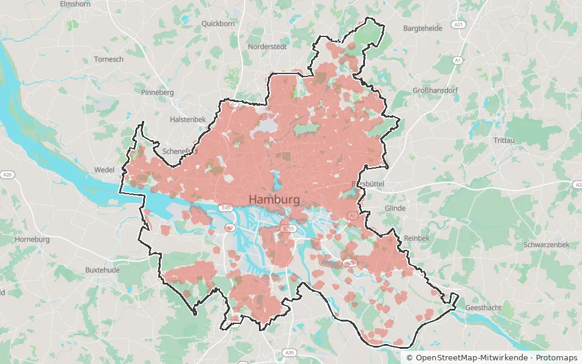
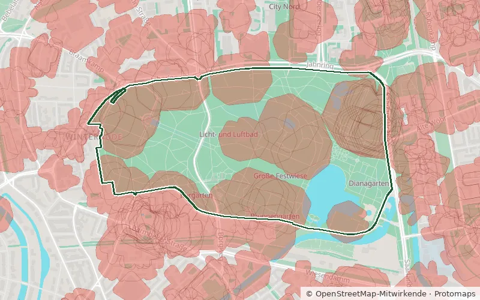
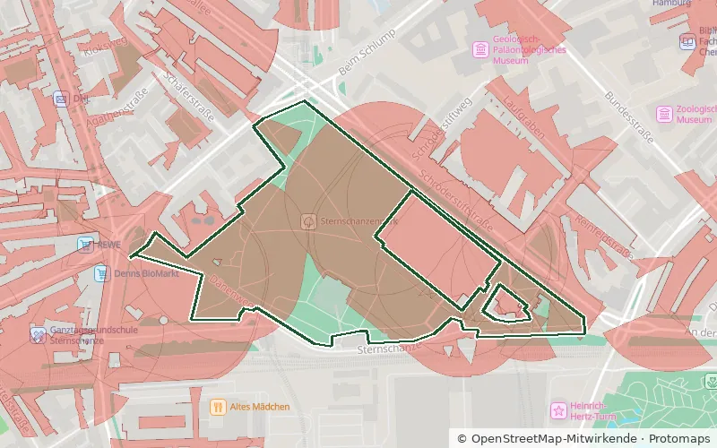
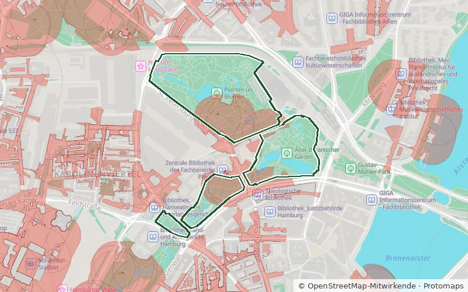
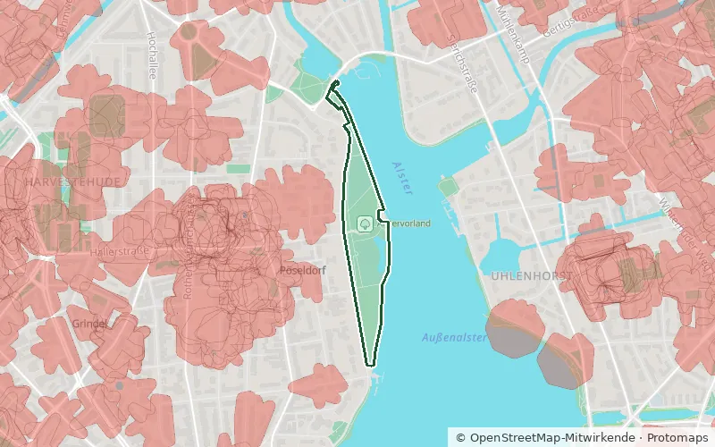
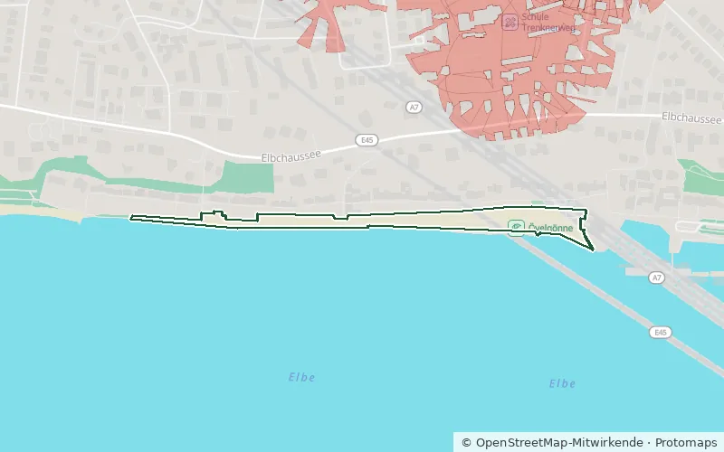
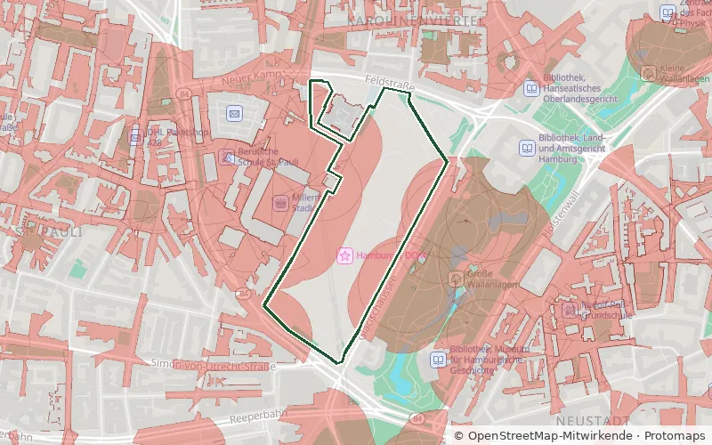

In Hamburg ist öffentliches Kiffen auf 124 km² verboten, das sind 16,6 % der Fläche von 747 km² (das Festland, ohne die Insel Neuwerk und das Wattenmeer). Grund sind 7 955 Einrichtungen, in deren Sichtweite nach § 5 KCanG nicht konsumiert werden darf, vor allem Sportstätten und Spielplätze. Sichtweite heißt: höchstens 100 Meter vom Eingangsbereich, und nur dort, wo kein Gebäude die Sicht verdeckt. Dazu kommen die Fußgängerzonen, in denen zwischen 7 und 20 Uhr nicht konsumiert werden darf, und überall die unmittelbare Gegenwart von Kindern und Jugendlichen.

Woher die Zonen kommen
| Einrichtung | Anzahl | Zonenfläche |
|---|---|---|
| Schulen | 555 | 35,0 km² |
| Kitas und Kindergärten | 980 | 23,5 km² |
| Kindertagespflege | 88 | 1,6 km² |
| Spielplätze | 2 855 | 48,7 km² |
| Kinder- und Jugendeinrichtungen | 316 | 6,3 km² |
| Sportstätten | 3 161 | 57,8 km² |
Die Spalte rechts zählt jede Art für sich; weil sich Zonen verschiedener Einrichtungen überlappen, ist ihre Summe größer als die 124 km² oben. Den größten Teil machen die 3 161 Sportstätten aus, von Bolzplätzen über Turnhallen bis zu Fitnessstudios, gefolgt von 2 855 Spielplätzen und 555 Schulen.
Anbauvereinigungen fehlen in der Tabelle: 18 hatten im Juli 2026 eine Erlaubnis, ihre Adressen veröffentlicht die Stadt nicht (Liste des Bezirksamts Altona).
Parks und Alster
Im Stadtpark in Winterhude liegen 53 % der Fläche in einer Zone: sieben Spielplätze, eine Kita und viele Sportanlagen liegen im Park. Der Sternschanzenpark kommt auf 84 %, mit drei Spielplätzen im Park und Sportplätzen am Rand.


Planten un Blomen liegt zu 30 % in einer Zone, vor allem um die sieben Spielplätze und zwei Kitas im Park. Das Alstervorland an der Außenalster liegt dagegen ganz außerhalb der Zonen (0 %): Dort gibt es weder Spielplatz noch Sportanlage.


Der Altonaer Balkon liegt zu 55 % in einer Zone, der Alte Elbpark zu 94 %. Am Elbstrand in Övelgönne gibt es keine Zone (0 %).

Innenstadt und St. Pauli
Eine amtliche Liste der Hamburger Fußgängerzonen haben wir nicht gefunden; maßgeblich ist das Schild vor Ort. Die Spitalerstraße ist Fußgängerzone, in der Mönckebergstraße fahren Busse, der Jungfernstieg ist seit 2020 nur für Privatautos gesperrt, und in Ottensen plant der Bezirk einen verkehrsberuhigten Geschäftsbereich, keine Fußgängerzone (Bezirksamt Altona). In der Fußgängerzone gilt zwischen 7 und 20 Uhr Konsumverbot; blau zeigt die Karte die Fußgängerbereiche, wie sie in OpenStreetMap eingetragen sind.
Von der Spitalerstraße liegen außerdem 25 % in einer Sichtweiten-Zone. Der Rathausmarkt (0 %) und der Hachmannplatz am Hauptbahnhof (0 %) liegen außerhalb der Zonen. Rund um den Hauptbahnhof und in weiten Teilen von St. Georg gilt seit August 2026 ein Alkoholverbot, zu Cannabis sagt es nichts (Bezirksamt Hamburg-Mitte).
Auf St. Pauli liegt der Spielbudenplatz an der Reeperbahn zu 65 % in einer Zone, das Heiligengeistfeld, auf dem der Hamburger DOM stattfindet, zu 51 %: Sportanlagen, Spielplätze und eine Kita liegen am Rand.

Hochschulen und Stadien
Hochschulen sind nach § 5 KCanG keine Verbotsorte. Die Hausordnung der Universität Hamburg verbietet auf dem ganzen Gelände den Konsum von Stoffen, die unter das Betäubungsmittelgesetz fallen (Hausordnung); Cannabis gehört seit April 2024 nicht mehr dazu. In Gebäuden von Hochschulen, Schulen und Behörden verbietet das Hamburgische Passivraucherschutzgesetz das Rauchen auch von Cannabis.
Im Volksparkstadion verbietet die Stadionordnung des HSV den Konsum von Cannabis, auch auf Zugängen und Parkplätzen (Stadionordnung); die Stadionordnung des Millerntor-Stadions erwähnt Cannabis nicht. Für DOM, Hafengeburtstag und Weihnachtsmärkte haben wir keine eigene Regel zu Cannabis gefunden; wo viele Kinder und Jugendliche sind, greift das Verbot in ihrer Gegenwart (§ 5 Abs. 1 KCanG).
Was sonst noch gilt
Hamburg hat feste Bußgelder: Konsum in Sichtweite einer Einrichtung oder in der Fußgängerzone kostet 500 Euro, in Gegenwart von Kindern und Jugendlichen 1.000 Euro (Behörde für Inneres und Sport). Zuständig ist die Innenbehörde. Auf Spielplätzen in öffentlichen Grünanlagen ist das Rauchen seit 2019 verboten (Ärzteblatt, Oktober 2019). Eigene Verbotszonen für Cannabis hat Hamburg nicht (Stand 26. November 2026).
Häufige Fragen
Wo darf man in Hamburg kiffen?
Außerhalb der roten Flächen, außerhalb der Fußgängerzonen zwischen 7 und 20 Uhr, nicht in Gegenwart von Kindern und Jugendlichen und nicht dort, wo ein Hausrecht es verbietet. Eine weiße Fläche auf der Karte heißt nicht, dass Konsum dort erlaubt ist: Die Karte kennt weder Hecken noch Bäume, die die Sicht nehmen, noch Einrichtungen, die in OpenStreetMap fehlen.
Darf man an der Alster kiffen?
Am Alstervorland liegt keine Sichtweiten-Zone. Es bleibt das Verbot in Gegenwart von Kindern und Jugendlichen, und an anderen Stellen des Ufers liegen Spielplätze und Sportanlagen in der Nähe.
Wie genau ist das?
Die Zonen sind aus OpenStreetMap berechnet, mit Gebäuden als Sichthindernis, und werden täglich neu gerechnet; die Zahlen auf dieser Seite sind vom 26. November 2026. Die Karte ist eine Orientierungshilfe, keine Rechtsauskunft. Wie gerechnet wird und wo die Grenzen liegen, steht auf der Über-Seite.
Fehlt eine Einrichtung oder ist eine falsch eingetragen? Korrekturen in OpenStreetMap erscheinen am Tag darauf auf der Karte; nur eintragen, was es vor Ort wirklich gibt.